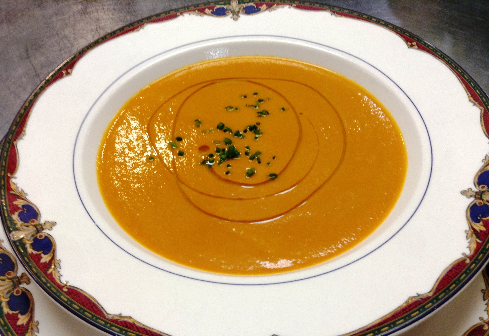

Buckeye Bed & Breakfast Blog
Heirloom Tomato Bisque Recipe
Posted on August 29, 2015 by leslie
This five-star velvety tomato bisque soup recipe will become your very favorite. It is rich, silky smooth, and packed with flavor. As a bonus, this bisque recipe is vegetarian friendly and gluten free. Chef notes:The key to this recipe is to use very ripe, in season heirloom tomatoes or garden grown tomatoes. The type of tomato isn’t super important. However, our chef prefers large red ones like Abe Lincolns or purple/black one (Black Krims). But really, as long as the tomatoes are ripe and delicious, the specific type is unimportant. You certainly can mix and match them too. Yield: approx 2 quarts Have on Hand: cheesecloth, blender, mesh strainer
- Ingredients:
- 2 large leeks, white and pale green part only, very thinly sliced
- 1 large Spanish onion, halved and very thinly sliced
- 4 Tbsp extra virgin olive oil
- 4 Tbsp butter, softened
- 8 – 10 large, ripe Heirloom tomatoes, core removed, large diced
- 2 fresh bay leaves, or 1 dry bay leaf
- A couple of sprigs of fresh thyme
- 1 Tbsp Smoked Spanish Paprika
- 1 Tbsp ground fennel seeds
- 1 Tbsp ground coriander seeds
- 2 cups of heavy cream
- Chili sauce, to taste (optional)
- Red wine vinegar to taste
- Salt & pepper
- Method:
- In a large bowl of cold water, wash the leek slices well to remove dirt. Gently remove leeks from the water & set aside.
- Tie the bay leaves and thyme sprigs in cheesecloth to make a sachet. If you don’t have cheesecloth, tie the bundle tightly with string. Set aside.
- In a large/deep sauce pan, over medium heat – add olive oil and butter. Once butter is melted, add the washed leeks and onions. Season with a couple of pinches of salt to help sweat the vegetables. Cook, stirring often, until the onions and leeks are translucent. Try not to get any golden color on the vegetables.
- Add tomatoes. Add the sachet of bay leaves and thyme. Turn the heat down to medium low. Cook the tomatoes until they have given off most of their liquid and they are very soft – about 30 minutes. Add spices (paprika, fennel seed, and coriander seed).
- Remove the sachet. Pour the contents of the pan into the blender. Blend on high until completely smooth. If possible, pass this soup through a mesh strainer. This makes the texture luxurious (but does not affect the taste).
- Pour into large container. Add heavy cream. Stir to combine. Season to taste with salt.
- At this point, if the soup is a little thick, add some water to adjust consistency. It should have body, but not too thick. If you add water, be sure to re-season to taste with salt. Then, add chili sauce and red wine vinegar to taste as well.
- Side notes:
- This tomato bisque is better the day after you make it. But it certainly can be enjoyed right away.
- Yes, you can freeze this bisque. Defrost fully – if it appears “chunky”, simply stir vigorously or put it in the blender to reach desired consistency.
Worthy Kitchen
Posted on August 2, 2015 by leslie
Whenever our guests are planning a day trip to Buckeye Bed and Breakfast we encourage a visit to Worthy Kitchen(just an hour from Rabbit Hill Inn). Worthy Kitchen is a fun, casual, delicious comfort food diner. But not a typical diner – a craft beer diner. Worthy Kitchen is many notches above on the quality of food scale! They are very dedicated to the mission of offering local farm sustainable foods. Icing on the cake – the beer! The awesome 18 draught craft beer taps offer the best of the Vermont and New England craft beer selections. Small batch breweries are showcased here. Not a beer drinker? Don’t fret. There is an equally impressive presentation of wines, hard ciders, and fantastic craft root beers and ginger ales, along with the usual soft drink options. Plan on spending some time here. You cannot zip in and zip out for a fast bite. The massive blackboard menu takes a while to absorb. Then there are the daily specials to consider. And THEN, the lengthy beverage listings. It’s all part of the experience. As many will tell you, the Worthy Kitchen is worth a visit! Go there. It’s fun! Worthy Kitchen is open 7 days. The Cambridge area is a popular day trip spot for Buckeye Bed and Breakfast guests. Worthy Kitchen is just one hour from Buckeye Bed and Breakfast.
Hot Air Balloon Rides in Ohio
Posted on June 2, 2015 by leslie
Is a hot air balloon ride on your bucket list? If so, allow us to introduce you to the world famous balloonmeister, Brian Boland. Boland Balloon flights are located in Columbus Ohio – just an hour from Buckeye Bed and Breakfast. Vermont hot air balloon rides are available year round, by reservation, generally at 6:00 am and 2 hours before sunset. Your incredible private hot air balloon experience will be about three hours. This includes set-up, over an hour in the air, and landing. Upon landing, celebrate with champagne (or soft drink) and a chase team will take you back to the Post Mills Airport (where it all began). You are in very good hands! Brian Boland, your pilot, has been ballooning since 1970. He is one of the most experienced balloonist in the world, has set numerous world records, and won several national championships. Brian has flown balloons all over the world, including the Alps and the Andes. In addition, he is a world famous balloon designer. So save some time to visit his Balloon Museum – a private collection of more that 100 balloons, airships, antique vehicles, and tons of other really neat stuff. Trust us, this Ohio hot air balloon trip is a truly wonderful and memorable experience. For those seeking a perfect proposal idea – this hot air balloon ride would be perfect (and never forgotten).